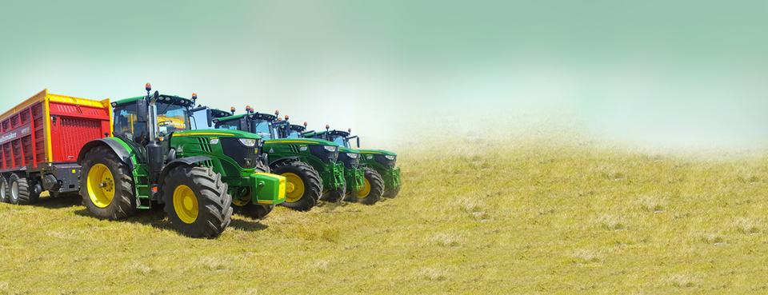
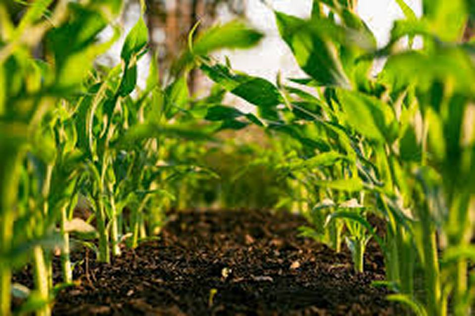
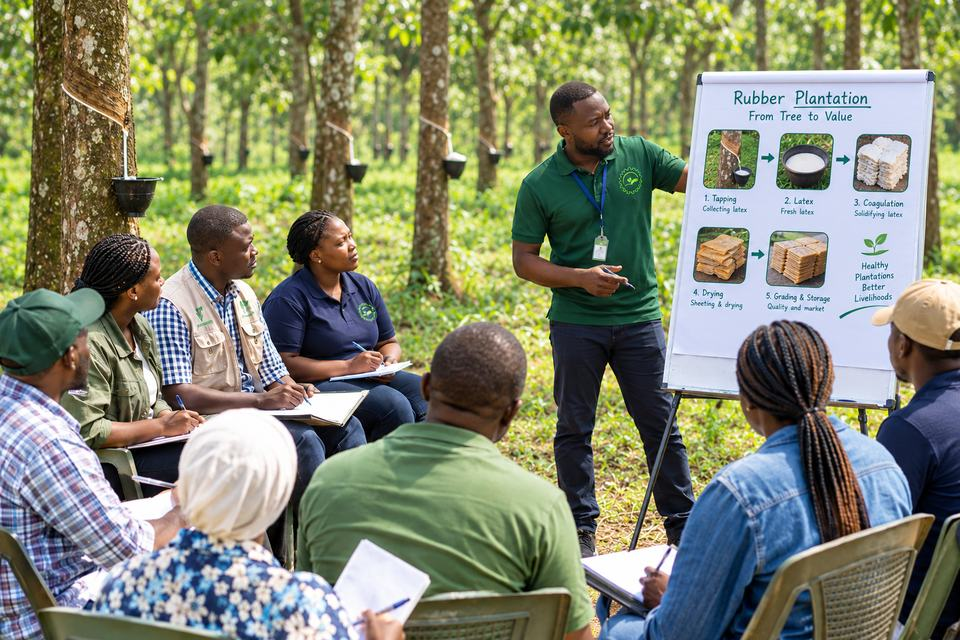
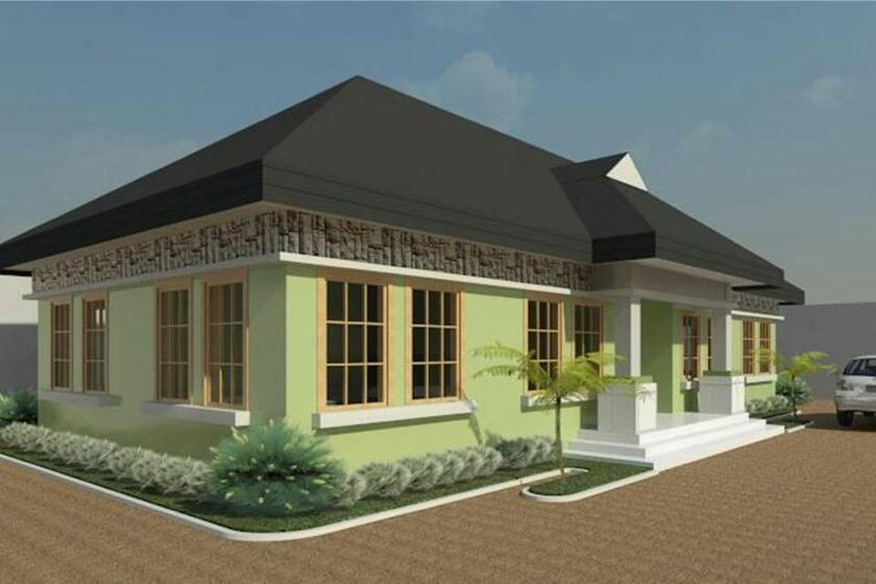
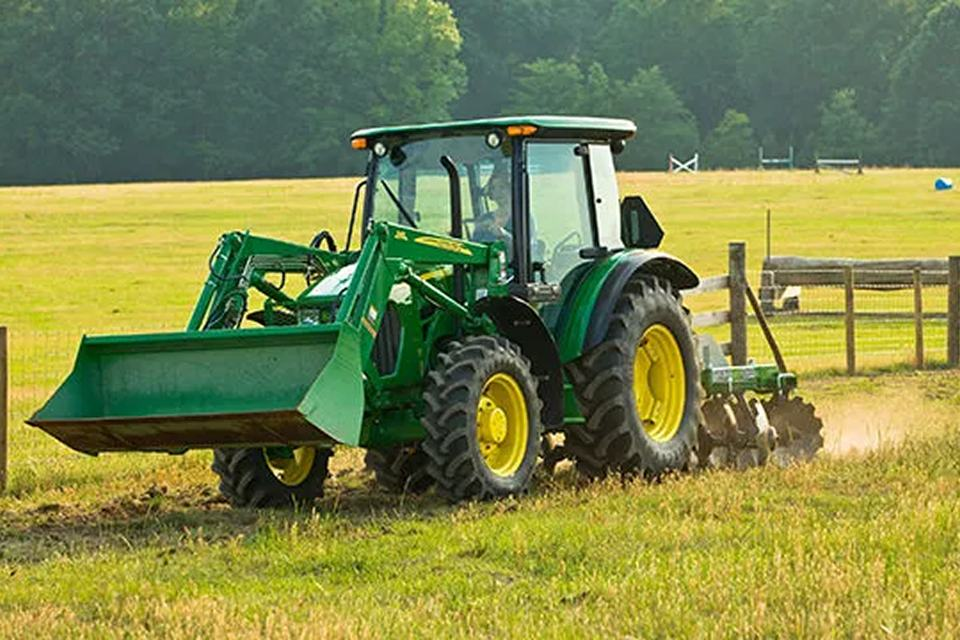
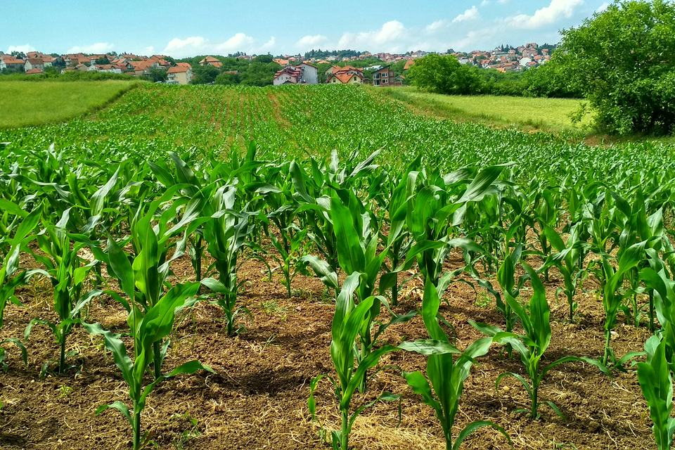
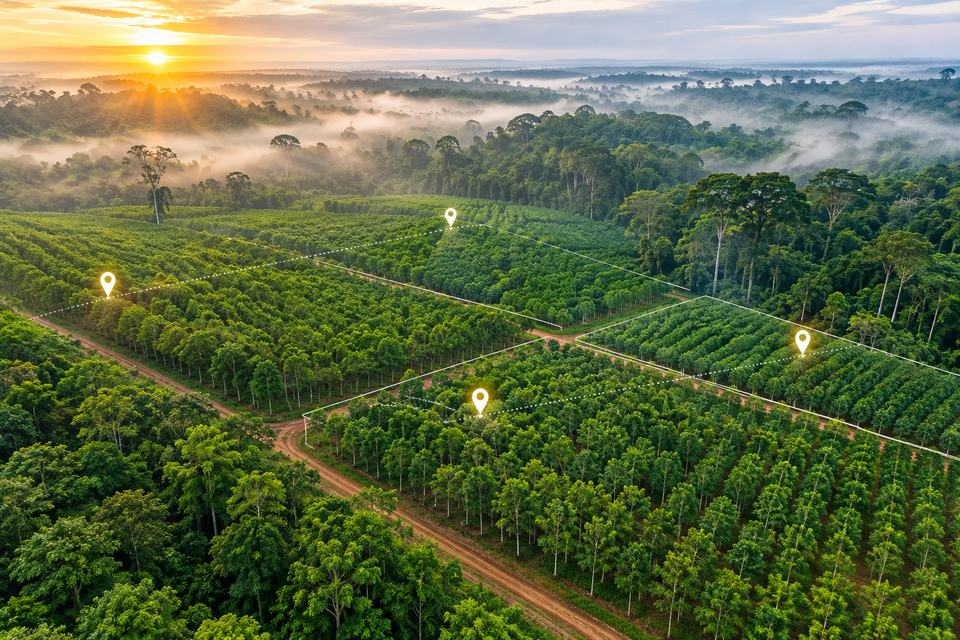

Our Services
Seven services across farms, infrastructure, people and compliance, delivered by one dependable team.
From the first plot of land to the finished building.
PMIS NIG. LTD combines agro-consultancy, construction and capacity building, so you can work with one partner from planning to harvest to handover.

Farm & Plantation Establishment
From land preparation to harvest, we set up farms and plantations that last.
We take a farm from a piece of land to a working operation, using modern practice and the lessons of our plantation work across Nigeria.
- Feasibility studies
- Land preparation
- Planting and establishment
- Farm management through to harvest
Best for: Investors, landowners and agribusinesses starting or expanding a farm.
Ask about this serviceAgro Consultancy & Project Management
Practical advice and hands-on management for farm projects.
We help you plan and run agricultural projects: how the land is used, what infrastructure it needs, and how to raise productivity and investor returns.
- Farm operations and productivity
- Land planning and layout
- Farm infrastructure planning
- Project management and monitoring
Best for: Corporate investors and farm owners who want expert oversight.
Ask about this service
Human Capacity Development
Training and people programmes for the agricultural sector.
Our extension services unit trains farmers and agro-professionals on the farm itself, with on-the-spot solutions and best practice.
- Farm-site training
- Extension services
- Training and development programmes
- Recruitment, outsourcing and agency services
Best for: Farmers, farm teams and organisations building agricultural skills.
Ask about this service
Civil & Building Construction
Functional infrastructure, built to standard and delivered on time.
We build for multinational companies and private organisations, to quality standards that meet COREN regulations.
- Schools and clinics
- Offices and staff residential quarters
- Private houses
- Roads, drains, platforms and toilets
Best for: Companies, institutions and individuals who need dependable construction.
Ask about this service
Agro Engineering & Tools Supply
The machinery, inputs and protective gear a farm runs on.
We supply and support the equipment behind a productive farm, and carry out the earth-moving work that prepares the land.
- Farm tools and implements
- Chemicals and fertilizers
- Safety and protective materials
- Earth moving and land preparation
Best for: Farms and contractors that need reliable supply and engineering support.
Ask about this service
Agro Land Sourcing
Finding and securing land for agricultural investment.
We find suitable land and help facilitate its acquisition, so your investment starts on solid ground.
- Locating suitable land
- Facilitating land acquisition
Best for: Investors who need the right land before they can start.
Ask about this service
EUDR Training & Audit
Get your supply chain ready for the EU Deforestation Regulation.
The EU Deforestation Regulation (EUDR) requires companies selling certain commodities, rubber among them, into the EU to prove that their products are deforestation-free and legally produced. We train your people and audit your operations so you can meet those requirements with confidence.
- EUDR awareness and compliance training for farm and supply-chain teams
- Readiness audits and gap assessments
- Plot mapping and geolocation records
- Traceability and due-diligence documentation
- Outgrower and smallholder training
Best for: Rubber and other commodity producers, processors and exporters supplying EU buyers.
See our EUDR training and audit work → Book EUDR training or auditA clear process from first call to final delivery.
- 1
Brief
You tell us what you want to achieve, where, and by when.
- 2
Plan
We assess the site and scope, then agree a plan, timeline and budget with you.
- 3
Deliver
Our team executes on site, with regular updates and quality checks.
- 4
Support
We hand over, train your people where needed, and stay available afterwards.
Tell us about your project
Whether it is a new farm, a training programme or a building, we will help you scope it and plan the next step.